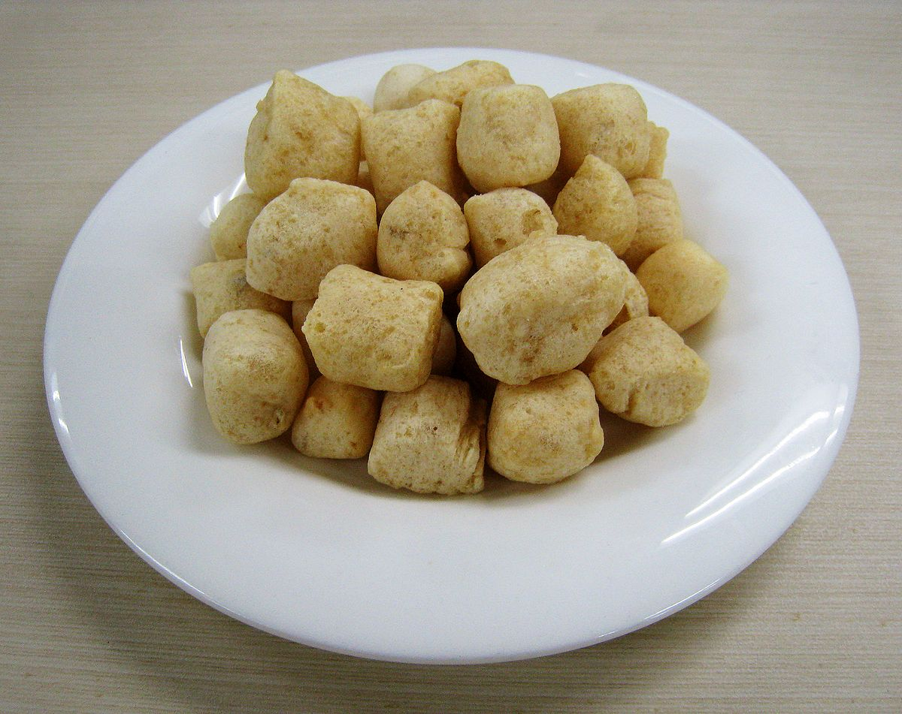

Amplang
One of the local food famous from my hometown is Amplang. It is a kind of cracker that is made of fish and flour. Even though it has a distinct smell, it tastes really good. Originally, Amplang was made only with Belida fish, but due to the number of fish that keeps decreasing, Amplang nowadays is made with other type of fish like mackerel.